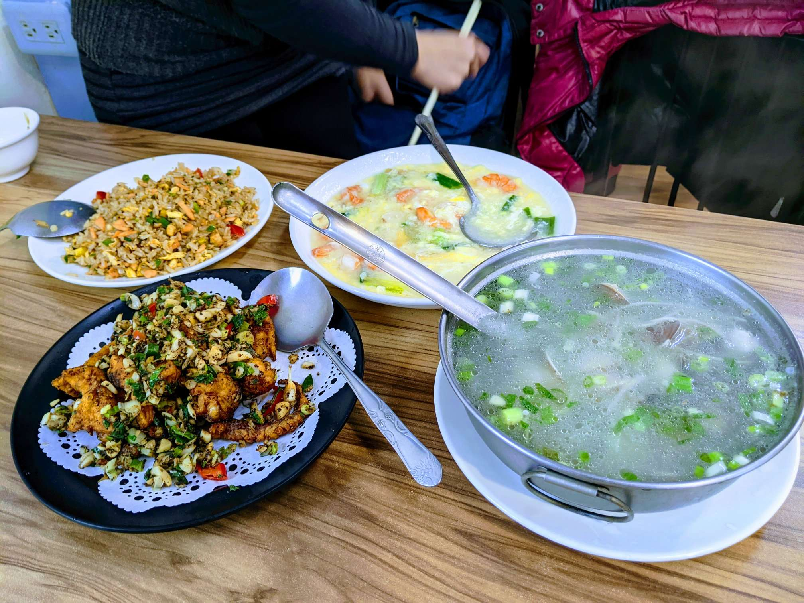
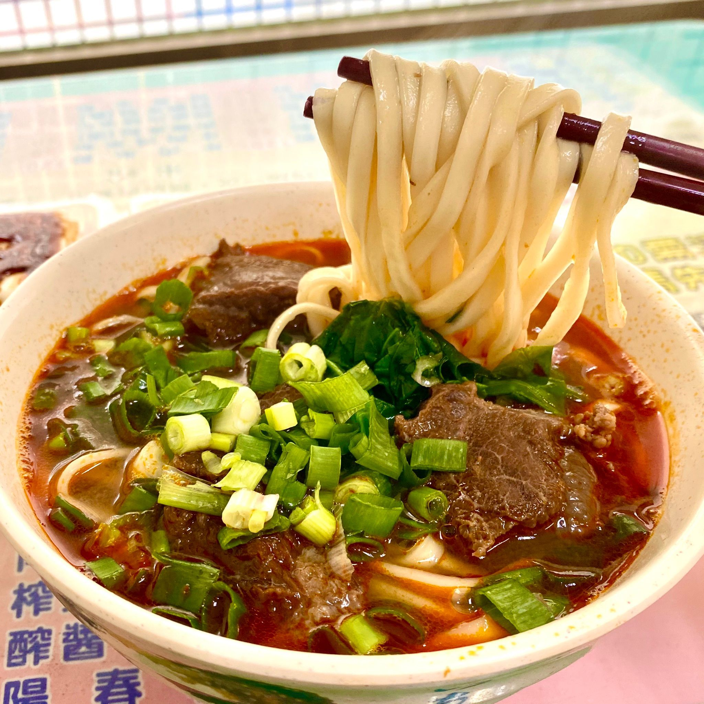
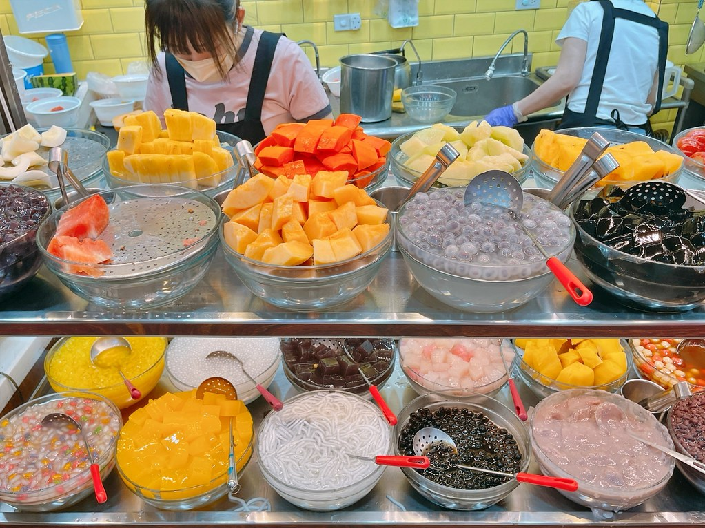
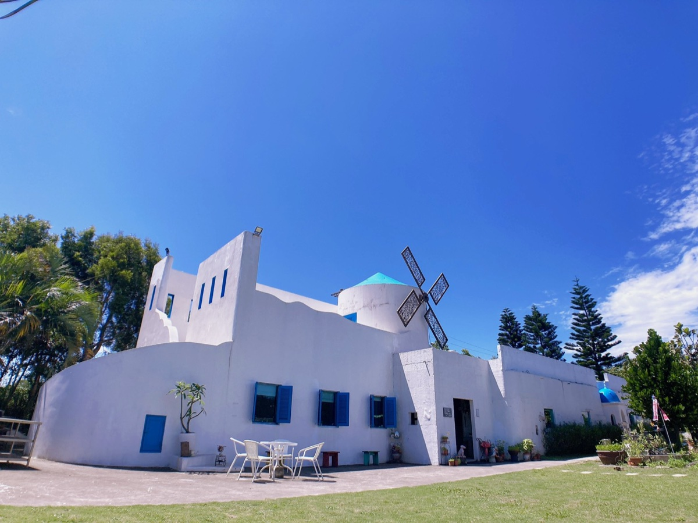
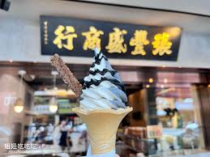
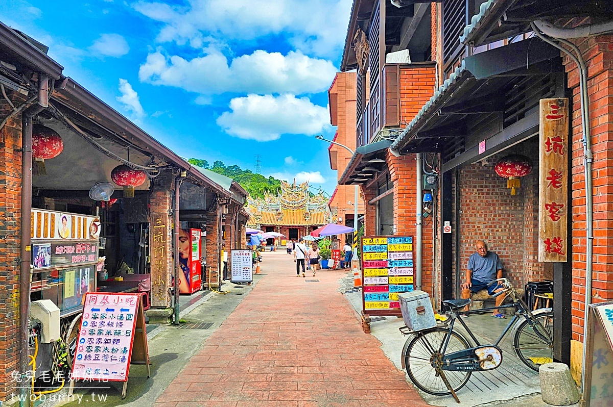
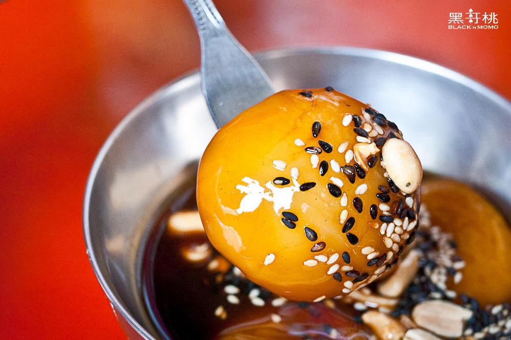
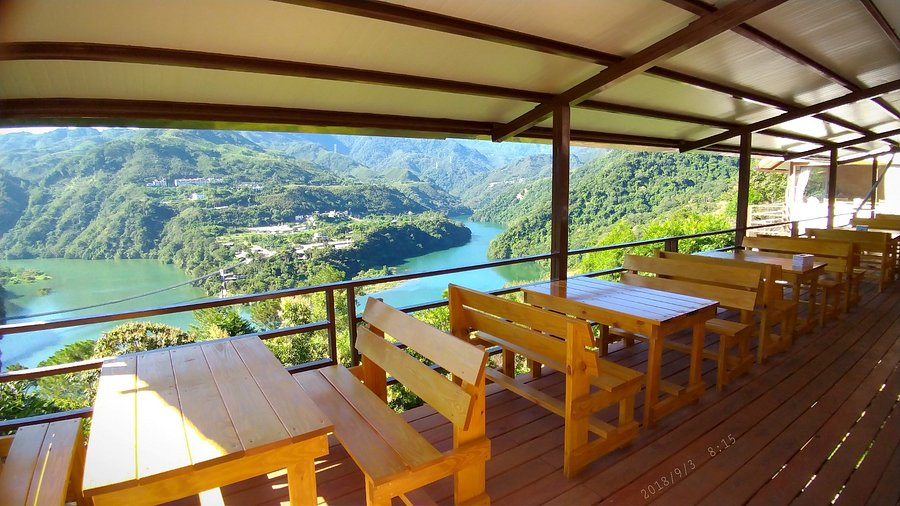

Lunch

海宴漁村料理
中午在永安漁港坐下來吃現撈海鮮，把上午的海線景色延伸成餐桌上的地方味。
一日旅行最怕只有趕路。我們把每一餐都安排在動線上——海線吃海味、看夕陽，再以熱湯牛肉麵與冰城甜點收尾；山線吃客家味，再以湖畔咖啡輕食畫下句點。
從漁港現撈海鮮午餐，到熱湯牛肉麵晚餐，再以鉅大自助冰城甜點收尾——海線一天的味覺記憶。

中午在永安漁港坐下來吃現撈海鮮，把上午的海線景色延伸成餐桌上的地方味。

看完永安漁港的夕陽，回到中壢以熱湯牛肉麵收尾，剛好平衡白天戶外走動的疲累感。

晚餐後散步到鉅大自助冰城，用一碗份量感十足的剉冰替整天畫下甜蜜句點。

不想吃熱炒海鮮的話，這裡是彈性午餐選擇。庭園、餐點、甜點都很適合慢慢用。

老店氣氛加上花生、芝麻風味，可彈性替代鉅大冰城，也可以順手帶點伴手禮。
午餐先在漁港旁吃飽，看完夕陽再回中壢點熱湯牛肉麵，最後以冰城甜點收尾，份量與節奏剛剛好。
客家老街的米食、阿秋姨的牛汶水點心，再以森鄰水岸景觀咖啡館的湖畔咖啡與輕食收尾——山線是另一套味覺記憶。

客家老街的飯食與小吃集中，是山線午餐的主場——粄條、客家小炒、米食隨選。

三坑老街的招牌客家點心，黑糖薑汁淋在 Q 彈麻糬上，是山線最有代表性的味道。

復興區的湖畔景觀咖啡館，坐在水岸邊喝杯咖啡、配點輕食，把山線一日畫下安靜的句點。
老街午餐時順便買一份阿秋姨牛汶水當點心，午後走完角板山後，再以森鄰水岸景觀咖啡館的湖畔咖啡與輕食畫下句點。
下午甜點可以二選一不必都吃。路線設計上保留彈性，吃太飽就少點一份，肚子有空間再加碼。